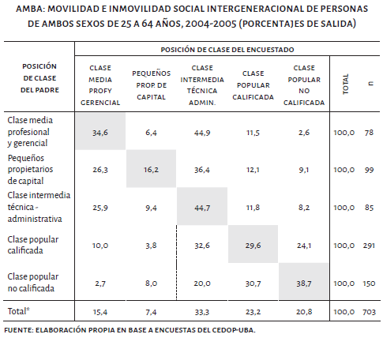

- Prefacio
- Agradecimientos
- I Aspectos teóricos
- 1 La estructura social en la Argentina actual
- II Fuentes de datos
- 2 Encuestas de hogares
- 3 Los censos de población modernos
- III Variables
- 4 Las características económicas de la población
- 5 Los Nomencladores de clases sociales
- IV Análisis
- 6 La clase como variable independiente
- 7 La clase como variable dependiente
- 8 Tiempo, espacio y clases sociales
- V Anexo
- 9 Introducción a R y RStudio
- VI Referencias bibliográficas
- Referencias
7.1 El estudio de la movilidad social
Como señala Carabaña (1997) en el estudio de las clases sociales existen dos grandes abordajes posibles: considerar a la clase como una variable independiente o como una variable dependiente. El primero de estos abordajes fue retomado en el Capítulo 7, denominado por el autor como análisis de clase, nos permite comprender cómo los comportamientos sociales pueden ser explicados desde el posicionamiento de clase. Por el contrario, el segundo enfoque, denominado por Carabaña como teoría de clases, hace referencia a las explicaciones sobre el surgimiento, la reproducción y la transformación de las clases sociales.
Si bien el mismo no aclara si los estudios de movilidad social se engloban dentro de este segundo abordaje, podemos así considerarlo, ya que nos permite el análisis de las transformaciones y reproducciones dentro del sistema de estratificación. El estudio de la movilidad social nos ayuda a comprender cuánto cambio la estructura de clases respecto a la de generaciones pasadas, así como qué rasgos de la estructura actual se mantienen tal como existían en el pasado.
Vale señalar que el estudio de la clase social como variable dependiente no se acota al análisis de la movilidad social, sino que otros factores pueden ser considerados como explicativos de la misma, tales como la dinámica demográfica, los cambios tecnológicos, las políticas económicas, etc.
7.1.2 Enfoques funcionalistas
La sociología de la movilidad social nace al calor del debate sobre la igualdad y en el seno del estructural-funcionalismo. Sus bases conceptuales se sustentan en la concepción liberal del orden social. Acorde con la teoría de la estratificación, la visión liberal-funcionalista comprendía a la sociedad como un campo continuo y homogéneo formado por individuos que desempeñan funciones de más o menos prestigio y remuneración, y que presentan amplias posibilidades de movilidad (Cachón Rodríguez, 1989; Kerbo, 2003).
Los primeros estudios de movilidad llevados a cabo por encuestas tuvieron lugar en el período de la segunda posguerra y sus preocupaciones giraban en torno a los niveles de movilidad que presentaban los distintos países y sobre la forma que la misma asumía. La tabla de movilidad —como se ilustra tabla siguiente—, para esta generación, constituye el insumo central para el estudio del fenómeno, conteniendo la misma la información sobre la posición social de las personas a las cuales se encuestó y la posición de su familia (generalmente del padre) cuando éstas tenían alrededor de 15 años (Breen, 2004, p. 3):
Gráfico 7.2: Ejemplo de tabla de movilidad (Dalle, 2016, p. 106)
Posteriormente, una segunda oleada de estudios de movilidad social, iniciada con la obra The American Occupational Structure (Blau & Duncan, 1967), marcaron un nuevo rumbo teórico y metodológico en el campo. En primer lugar, Blau y Duncan plantearon un abordaje del fenómeno de la movilidad social considerándolo como parte del “proceso de estratificación”. De este modo descompusieron el concepto en sus elementos constituyentes, es decir, en la posición de origen y de destino. Ya no enfocaron el problema desde el estudio de los patrones de movilidad, sino a partir de los efectos que las características adscriptivas presentaban sobre el logro ocupacional. En términos operativos, la preocupación rondaba en torno a cómo diversos factores intervinientes (principalmente, la educación) y las contingencias de la carrera ocupacional podían modificar la influencia de los orígenes sociales sobre los logros ocupacionales de los sujetos.
Gráfico 7.3: Modelo básico de logro de estatus (Blau & Duncan, 1967, p. 170)
![Modelo básico de logro de estatus [@Blau.Duncan1967, pp. 170]](imagenes/blau.png)
El trabajo de Blau y Duncan resaltaba tres aspectos:
La utilización como criterio clasificatorio de un índice socio-económico (SEI)15. Esta elección tenía dos fundamentos. En primer lugar, los autores asumían que la estructura ocupacional se configuraba de una manera más o menos continua, más que en clases discretas y separadas. En segundo lugar, el carácter gradacional era apropiado para la aplicación de determinadas técnicas estadísticas (correlaciones y regresiones) que el modelo analítico requería.
La utilización de la técnica del path analysis (variante de la regresión lineal múltiple) para conocer los efectos directos e indirectos que ejercen cada una de las variables.
Las conclusiones sobre la preminencia de los procesos de movilidad social en la sociedad estadounidense. The American Occupational Structure sentó una serie de conclusiones que demostraban que Estados Unidos era un país en el que el mérito era el principal motor de ascenso social. El nivel educativo de los encuestados era considerado como la principal variable explicativa, por sobre las características de origen (Blau & Duncan, 1967, pp. 155, 169–170).
7.1.3 Enfoques de clase
A partir de los años ’70, con el rompimiento del consenso ortodoxo estructural funcionalista, se abre una puerta al pluralismo sociológico en el campo de la movilidad social, a partir de la convivencia de diversas escuelas y tradiciones. Estos enfoques hicieron mayor énfasis en las desigualdades de origen y en la comprensión del fenómeno de la movilidad como un aspecto del proceso de formación y acción de las clases. Desde esta perspectiva general, las chances de movilidad social estarían fuertemente determinadas por las condiciones de origen (Kerbo, 2003, p. 156). Asimismo, muchos autores además de situar este abordaje en continuidad con la tradición weberiana, acuerdan que también en los escritos de Marx podría encontrarse cierta preocupación por el fenómeno de la estructura de la movilidad y las desigualdades de origen (Kerbo, 2003, p. 155).
La mirada de John Goldthorpe fue una de las más relevantes dentro de este enfoque. Para este autor, la movilidad social es un fenómeno que ocurre en la estructura de clases, es decir, dentro de las relaciones laborales, y no en un continuo de prestigio, estatus o recursos socioeconómicos. Desde el campo técnico también se avanzó a pasos agigantados, al comenzarse a utilizar los modelos loglineales. Esta técnica permitió el tratamiento estadístico para evaluar la asociación entre los orígenes y los destinos, a partir de variables discretas, es decir, habilitando la posibilidad de utilizar clasificaciones basadas en esquemas de clases sociales. Este tipo de análisis habilitaba el abordaje multidimensional, acercándose de este modo a las características que proponía el path analysis, incorporándose al análisis las variables de educación, cohorte, género y/o país.
Uno de los grandes aportes a los que Goldthorpe y su equipo arribó, a través del Proyecto Comparative Study of Social Mobility in Industrial Nations (CASMIN) que recopiló una serie de encuestas sobre movilidad social de los países con mayores niveles de industrialización de Europa (sumando a Japón y Estados Unidos) de alrededor de la década del ’70, fue que la condición de clase de origen, a diferencia de lo postulado en los abordajes funcionalistas, aún continúa teniendo efectos sobre el destino de las personas, y que esto debe ser explicado a partir de las ventajas y desventajas que se asocian a cada posición de clase (Erikson & Goldthorpe, 2002).
Referencias
ver Capítulo 6↩︎